At a glance
A project-recovery control tower. An AI agent works out what a slipped milestone really breaks, using deterministic calculations. A named human approves the plan, and every step is audited. Approval can't be faked through chat.
Overview
ChangeGuard is an agentic "project recovery control tower" built on Microsoft Copilot Studio and the Power Platform. When a milestone slips, a project manager describes it in plain language. The agent then calculates the downstream impact, compares documented recovery options, and saves a versioned change request. Only a signed-in, authorized reviewer can approve it. Execution happens after approval, is safe to retry without creating duplicates, and every transition, including refusals, is written to an append-only audit trail.
The problem
When equipment arrives late, a supplier reschedules, or a test fails, the expensive part is the week that follows. Someone has to work out:
- which downstream milestones move, and by how many working days;
- which customer commitments are no longer feasible;
- whether an expedite option actually helps, and at what cost;
- who is allowed to approve the change;
- what follow-up work needs assigning, and to whom.
This usually happens in spreadsheets and chat threads, with no audit trail. Generic AI chatbots make it worse. They produce confident dates that were never actually calculated, and they can "confirm" approvals that never happened.
The solution
ChangeGuard separates conversation from calculation and authority:
- The agent talks. It gathers the missing project, milestone and date details and explains the results.
- Deterministic flows calculate. Dates and dependency effects come from a working-day calendar and a precomputed dependency closure, never from model arithmetic.
- Humans decide. Chat text can't approve anything. Only a listed reviewer, identified from their signed-in session, can approve or reject.
- Execution is gated and idempotent. Recovery actions are created only for a recorded approval, the matching baseline version and a documented option. A retry reuses existing actions instead of duplicating them.
Key features
Impact analysis
- A deterministic impact engine walks the working-day calendar and dependency closure.
- It returns affected and unaffected milestones, new dates, slip in working days, infeasible external commitments, assumptions, unknowns, and the dependency path it followed.
Recovery options
- Documented recovery options are classified against an explicit "as of" date as Selectable, Expired or NotYetQuoted. Unknown options are never presented as confirmed.
- Each selectable option can be simulated, re-running the engine with its arrival date to compare cost, slip and feasibility.
Governed change requests
- Change requests are saved with a stable request key and an assessment fingerprint.
- Silent duplicates are refused (
AlreadyExists), and so is conflicting reuse of a key (KeyConflict). - The approve/reject step checks that the reviewer is on the approver list, validates the state transition, and uses a decision lock so two reviewers can't decide the same request at once.
Execution and follow-through
- Execution is guarded: it checks the recorded decision, the option, and that the baseline hasn't changed since the assessment.
- Recovery actions have stable keys, so running the same plan twice creates nothing new.
- Each action moves through a state machine: Start, Block (with a reason), Complete (evidence required), Cancel.
Control tower app
- A model-driven Power Apps app with an approval queue, decided requests, and overdue and blocked actions.
- It also shows the audit trail, milestones, recovery options and test results.
- Governed fields are read-only, and reviewers act through in-app buttons.
How it works
The Copilot Studio agent orchestrates seven tools, each a Power Automate agent flow. Human decisions run as separate flows under the signed-in user's identity. All state lives in Dataverse tables, and every transition writes an audit event.

Tech stack
| Layer | Technologies |
|---|---|
| Agent | Microsoft Copilot Studio (generative orchestration + a standard-orchestration variant) |
| Tools and workflows | Power Automate agent flows and cloud flows |
| Data | Microsoft Dataverse (tables, alternate keys, security roles, ExecuteChangeset for atomic writes) |
| App | Power Apps model-driven app, custom forms and views |
| Packaging | Power Platform solutions, connection references, environment variables, Solution Checker |
| Tooling | Python (flow-definition generators, validators, test suites), Node.js + Playwright (deployment and verification scripts), Dataverse Web API |
| Deliverables | python-pptx, headless Edge HTML→PDF, ffmpeg + faster-whisper (captions) |
Engineering highlights
- Deterministic core, conversational edge. All date and dependency calculations run in flows against Dataverse data, never in the language model. The same 18 engine evaluation cases pass locally and on the platform (18/18).
- Approvals chat can't fake. A prompt-injection test that pastes a "SYSTEM OVERRIDE" instruction into chat was refused. Approval only exists as a recorded action by an authenticated reviewer.
- Idempotency throughout. Request keys, assessment fingerprints and unique action and event keys (Dataverse alternate keys) make saves and executions safe to retry.
- Atomic commit points. In the hardened build, the decision and its audit record are committed together in one Dataverse ExecuteChangeset transaction.
- Fail-closed behaviour. A technical failure marks the run as failed and never writes a misleading success entry to the audit log.
- Least privilege. Four security roles across 11 tables were verified privilege by privilege: 264 privileges checked, with no over-grants.
- Portable solution. Flows use connection references and environment variables, with no hard-coded environment values.
- Evidence-heavy validation:
- 151-case validation matrix: 145 pass, 3 partial, 0 fail.
- 709/709 offline checks on the hardened build.
- A full end-to-end demo run: saved, approved by a real human, executed, then re-executed with zero duplicate actions.
- Code-generated low-code. Python generators build the flow definitions, and Playwright scripts deploy and verify them, so the low-code artefacts are reproducible and reviewable.
Challenges & what I learned
- LLMs are confident with dates. Challenge: models happily "calculate" schedule slips that are wrong. Approach: the agent never computes dates; it calls a deterministic engine and reports its assumptions and unknowns. Lesson: in agentic systems, the model should route and explain, and deterministic code should own anything that must be correct.
- Approvals must be unforgeable. Challenge: a chat interface invites people to say "I approve" or to inject instructions. Approach: approval is a separate, authenticated human flow backed by an approver list and a decision lock. Lesson: treat all chat text as data, never as authority.
- Retries shouldn't create chaos. Challenge: flows retry, users click twice, and network calls fail halfway. Approach: stable keys, upserts and fingerprinted requests, so repeating an operation reuses what already exists. Lesson: idempotency is a product feature, not just a backend detail.
- Audit trails must tell the truth. Challenge: partial failures can leave records claiming success. Approach: atomic commit of status and audit together, and fail-closed termination. Lesson: an audit log is only valuable if it can never lie.
- Making low-code reproducible. Challenge: hand-built flows are hard to review, version and redeploy. Approach: generate the flow definitions from Python and verify deployments with scripted browser automation. Lesson: engineering discipline carries over to low-code platforms.
Status & what's next
- Submitted to the Microsoft Agent-a-thon (Level 2, Maker) with a captioned demo video, a presentation and a technical submission document.
- The hackathon release is frozen. A production-hardening track (least-privilege roles, atomic commits, portable flows) is verified in an isolated test environment.
- All demo projects and data are fictional.
- Next ideas:
- integration with source systems (Planner, Project, Azure DevOps);
- regional holiday calendars and resource-capacity modelling;
- group-based approvers;
- notifications and escalation for overdue actions;
- a portfolio-level dashboard.